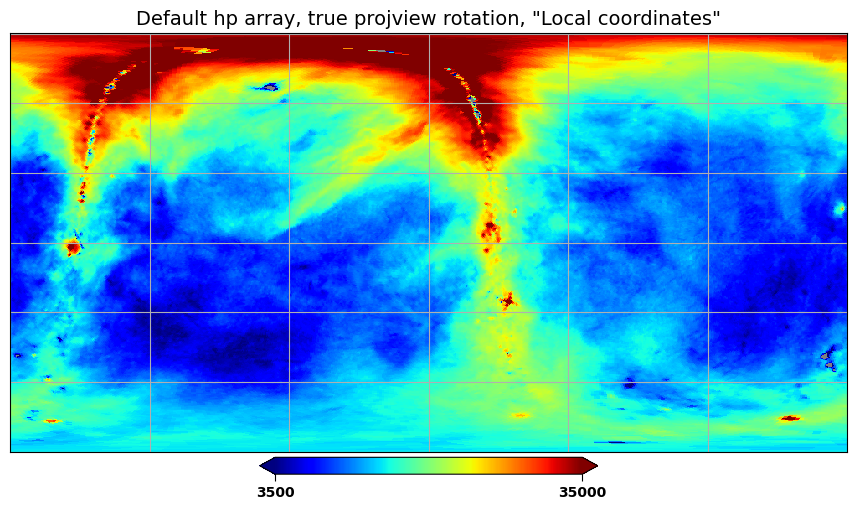
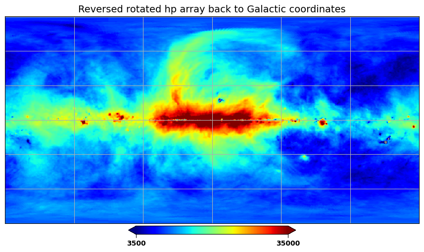
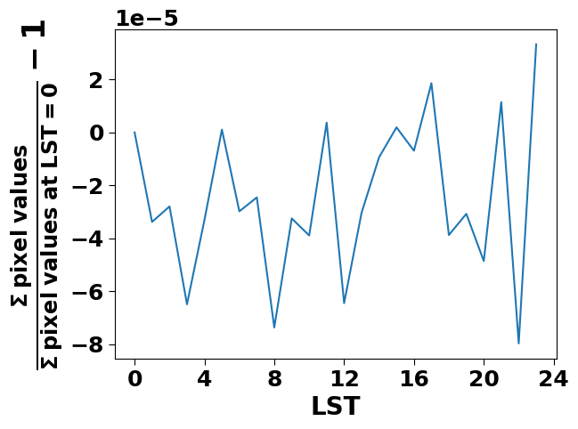

Permanent hpmap array rotation¶
[1]:
# sky map
import matplotlib.pyplot as plt
import os
import sys
from radiocalibrationtoolkit import *
[INFO] LFmap: Import successful.
[2]:
################################################################################################################
# THIS IS NOT RECOMMENED APPROACH, THE HP MAP ARRAYs SHOULD BE ALWAYS BY DEFAULT IN GALACTIC COORDINATE SYSTEM #
################################################################################################################
[3]:
# some global plot settings
plt.rcParams["axes.labelweight"] = "bold"
plt.rcParams["font.weight"] = "bold"
plt.rcParams['font.size'] = 20
plt.rcParams['legend.fontsize']= 14
plt.rcParams['xtick.minor.width']= 2
plt.rcParams['ytick.minor.width']= 2
plt.rcParams['xtick.major.size']= 5
plt.rcParams['ytick.major.size']= 5
plt.rcParams['xtick.labelsize']= 18
plt.rcParams['ytick.labelsize']= 18
[4]:
# create instance of galactic map
frequency_MHz = 45
gsm2016 = GlobalSkyModel2016(freq_unit="MHz")
gsm2016_map = gsm2016.generate(frequency_MHz)
# convert it to custom NSIDE, THE CONVERSION IS NOT NEEDED
new_nside = 128
gsm2016_map_N = hp.ma(hp.pixelfunc.ud_grade(gsm2016_map, new_nside))
[5]:
# set lst, latitude and create rotation parameters for projview function
lst = 18
latitude = -35.206667
rotation_parameters = create_rotation_parameters(lst, latitude)
[6]:
# just pass the example map to "m" variable
m = gsm2016_map_N
# reindexing array to local coordinates
m_rotated = rotate_default_hpmap_array_from_galactic2local_coordinates(m, lst, latitude)
[7]:
# inverse operation, reindexing rotated array back to the Galactic coordinates
m_rotated_and_reverse_rotate = rotate_default_hpmap_array_from_galactic2local_coordinates(m_rotated, lst, latitude, inv=True)
[8]:
projview(
m,
norm='log',
cmap='jet',
graticule=True,
return_only_data=False,
# coord=["G",'C'],
# rot=rotation_parameters,
# invRot=True,
min=3500,
max=35000,
projection_type='cart',
title='Default hp array, no projview rotation, "Galactic coordinates"'
)
[8]:
<matplotlib.collections.QuadMesh at 0x7fa9601bffd0>
[9]:
projview(
m,
norm='log',
cmap='jet',
graticule=True,
return_only_data=False,
coord=["G",'C'],
rot=rotation_parameters,
invRot=True,
min=3500,
max=35000,
projection_type='cart',
title='Default hp array, true projview rotation, "Local coordinates"'
)
[9]:
<matplotlib.collections.QuadMesh at 0x7fa96014fb80>

[10]:
projview(
m_rotated,
norm='log',
cmap='jet',
graticule=True,
return_only_data=False,
# coord=["G",'C'],
# rot=rotation_parameters,
# invRot=True,
min=3500,
max=35000,
projection_type='cart',
title='Rotated hp array, no projview rotation, "Local coordinates"'
)
[10]:
<matplotlib.collections.QuadMesh at 0x7fa95f912bf0>
[11]:
projview(
m_rotated,
norm='log',
cmap='jet',
graticule=True,
return_only_data=False,
coord=["G",'C'],
rot=rotation_parameters,
invRot=False,
min=3500,
max=35000,
projection_type='cart',
title='Rotated hp array, false projview rotation, "Galactic coordinates"'
)
[11]:
<matplotlib.collections.QuadMesh at 0x7fa95f913100>
[12]:
projview(
m_rotated_and_reverse_rotate,
norm='log',
cmap='jet',
graticule=True,
return_only_data=False,
# coord=["G",'C'],
# rot=rotation_parameters,
# invRot=True,
min=3500,
max=35000,
projection_type='cart',
title='Reversed rotated hp array back to Galactic coordinates'
)
[12]:
<matplotlib.collections.QuadMesh at 0x7fa95f5d6f50>

[13]:
# numerical check after the rotation, the differences should be very small, e.g., of order
# convert it to custom NSIDE, THE CONVERSION IS NOT NEEDED
new_nside = 64
gsm2016_map_N = hp.ma(hp.pixelfunc.ud_grade(gsm2016_map, new_nside))
m = gsm2016_map_N
sums = []
for lst in range(24):
sums.append(np.sum(rotate_default_hpmap_array_from_galactic2local_coordinates(m, lst, latitude)))
sums = np.asarray(sums)
[14]:
fig, ax = plt.subplots()
ax.plot(sums/sums[0] - 1)
ax.set_xlabel('LST')
ax.set_ylabel(r'$\frac{\Sigma \: \mathrm{pixel\; values}}{\Sigma \: \mathrm{pixel\; values\; at\; LST=0}} - 1$', fontsize=25)
ax.xaxis.set_major_locator(MultipleLocator(4))
